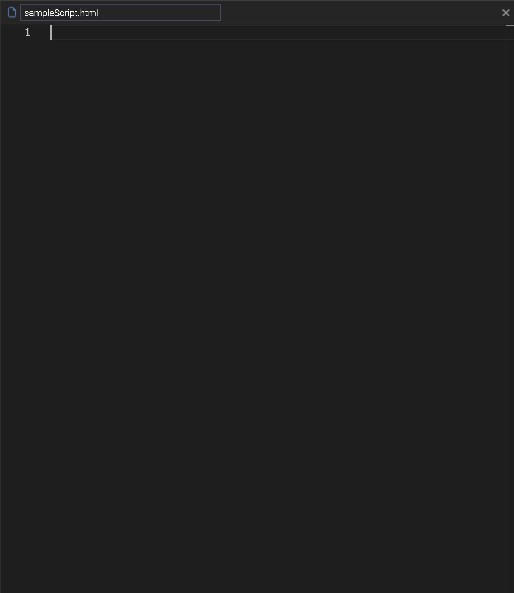

Vertex Analytics | v9 API
The Vertex Analytics v9 API allows for easy understanding, calculating, and tracking of futures symbols in more than just real-time using v9 at https://v9.vertex-analytics.com.
Contact: support@vertex-analytics.com
Documentation by Blake Boris, William Leiby, and David Salvador
API Manual
v9 is an analytical product for tracking past and current futures contracts. It allows you to programmatically perform actions based on incoming CME WebSocket event data with nanosecond precision and same-day transaction settlement (T-0).
Accessing v9
The latest build of v9 may be accessed at v9.vertex-analytics.com.
v9 Editor
The v9 Editor is where programmers can write custom Javascript-based scripts to build out individual data visualization solutions.
Each script, located on the lefthand side, corresponds to a data visualization solution located on the righthand side.

Initially, you must click the "new script" button, shown above, in order to access all of the different sections of the v9 Editor.
Sections
Top-bar
The top-bar houses four navigation buttons to the right that each take you to different pages of v9.
| Top-bar Buttons | |
|---|---|
 |
Navigates to the v9 Dashboard |
| Navigates to the v9 Data Center | |
 |
Navigates to the v9 Documentation |
 |
Navigates to the v9 Log In Page |
Left-bar
The bar on the left-hand side of the v9 Editor contains options for showing and hiding different sections of v9.
| Left-bar Top Buttons | |
|---|---|
| Shows / hides the Explorer | |
| Shows / hides the Text Editor | |
| Shows / hides the Pane | |
 |
Shows / hides the Debug Output |
Explorer
- Top buttons
These buttons correspond to different actions that may be performed on files within the explorer.
- Your scripts
- Templates
- Each of the templates are divided up by their respective libraries.
Text Editor
This section represents the area to the right of the file section where users create and edit HTML files that contains JavaScript logic displaying different data visualizations.

Debugging Output
This section represents the area below the text editor where syntax and runtime errors within the current script are logged.
- Chrome's built-in console will handle issues with external libraries.

Pane
The pane section represents the area to the right of the text editory where data visualizations are displayed for running scripts. This is also the section where users can directly put in symbol and date values for the feeds they so choose to receive.

File Architecture
As part of the file architecture, there are four main parts that make up each file:
Library Importations
This section refers to the top of the HTML file where both v9's propritary library and third-party libraries are imported.
Every script will import the v9 backend using:
<script src="https://v9.vertex-analytics.com/_vxaapi-1.0.0/v9.js"></script>
JavaScript Section
This section refers to all of the data visualization logic that is executed within v9's runtime. This includes class declaration for the v9 event feed, the lifecycle methods associated with a v9 feed, as well as the instantiation of a v9 feed object after defining all of the data visualization logic.
There are five lifecycle methods associated with each v9 feed:
Each of these lifecycle methods executes as a different point in time during the runtime of any particular script. To see the parameters associated with each of the lifecycle method, please refer to
<script> class CustomFeedName extends v9.feed { onOpen(){} onLoad(){} onRender(){} onRender(){} } </script>-
onOpen(pMeta) { }This is the first method that is called when a script is run as soon as the current script's custom feed object (
class CustomFeedName extends v9.feed) is instantiated. It only runs once.Parameters
- pMeta: Contains metadata associated with each symbol ran within the v9 runtime.
-
onLoad() { }- This method is called when an object from the
class CustomFeedName extends v9.feedis instantiated and the pane has initally loaded all previous events and information from the current symbol.
- This method is called when an object from the
-
onRender() { }- This method is called, at most, 60 times per second once onLoad completes.
-
onEvent(pSymbol, pEvent, pRealTime) { }This method is called once for every incoming event in relation to the current symbol.
For feeds with multiple contracts, see pMeta in the onOpen() lifecycle method above. *** this isn't a feature yet
Parameters
pSymbol: Name of the current symbol
pEvent: Current event being handled
pRealTime: Boolean determining whether or not to only handle current events
-
onStop() { }- This method is called when the script is stopped by the user. (does this run if it crashes in runtime?)
-
CSS Section
- This section refers to styling overrides one makes within their script(s).
v9 Dashboard
v9's Dashboards are composed of either one or multiple scripts written in the v9 Editor, and they can easily be exported and shared with other users.
v9 Dashboards are where traders/portfolio managers monitor contracts using the charts built out in the v9 Editor section.